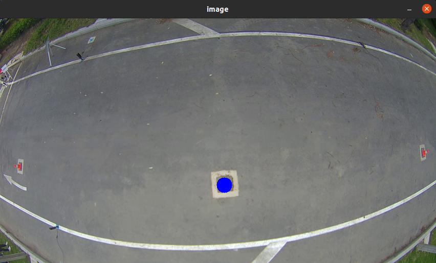

Update cone position for slaloms
To update the cone position for slaloms, you need to change the variables on top of the files ~/ansv_componente_3/Pista/Vision/Motorcycle_algorithms/slalom/high_vel_slalom_functions.py and ~/ansv_componente_3/Pista/Vision/Motorcycle_algorithms/slalom/low_vel_slalom_functions.py.
As an example, the following code shows the cone positions for the high_vel_slalom_functions.
34# Poste 1
35CONE_POS_X_1 = 430
36CONE_POS_Y_1 = 307
37
38#-------------------------------------------------------------#
39#-------------------------------------------------------------#
40#-------------------------------------------------------------#
41# Poste 2
42CONE_POS_X_2 = 442
43CONE_POS_Y_2 = 325
44
45#-------------------------------------------------------------#
46#-------------------------------------------------------------#
47#-------------------------------------------------------------#
48# Poste 3
49CONE_POS_X_3 = 413
50CONE_POS_Y_3 = 344
51
52#-------------------------------------------------------------#
53#-------------------------------------------------------------#
54#-------------------------------------------------------------#
55# Poste 4
56CONE_POS_X_4 = 502
57CONE_POS_Y_4 = 338
58
59#-------------------------------------------------------------#
60#-------------------------------------------------------------#
61#-------------------------------------------------------------#
62# Poste 5
63CONE_POS_X_5 = 494
64CONE_POS_Y_5 = 301
Obtain and update the cone position
To update the cone positions, you need to change the variable CONE_POS_X_NUM and CONE_POS_Y_NUM, for each of the cones. To do so, you need to know the position of the cones in the image. To do so, you can use the following steps:
Open the file ~/ansv_componente_3/Pista/utils/cone_position.py and change the variable video_path to the path of the video you want to use to find the cone positions.
33 # Set the direction of the video 34 video_path = "/home/josefajardo/Documents/Set_datos_ANSV/Moto_circ/Poste_2_30_08_2022_13_12_45.avi"
Open a terminal and run the following commands:
cd ~/ansv_componente_3/Pista/utils python3 cone_position.pyA window will open showing the video which path corresponds to the one set in step 1.
Click on top of the cone, a blue circle will appear. Adjust the clicked point to be as centered as possible.
Note
To override the cone position, simply click on top of the cone again.
To end the process, press the q or Esc key. The position of the cone will be printed in the terminal. An example in shown below for post 2.
Cone position: [[438, 326]]
Note
The first number corresponds to the x position and the second to the y position.
Update the cone position of the respective post in the files ~/ansv_componente_3/Pista/Vision/Motorcycle_algorithms/slalom/high_vel_slalom_functions.py or ~/ansv_componente_3/Pista/Vision/Motorcycle_algorithms/slalom/low_vel_slalom_functions.py accordingly. An example is shown below for post 2.
# Poste 2 CONE_POS_X_2 = 438 CONE_POS_Y_2 = 326
{kind=link}
{kind=link}